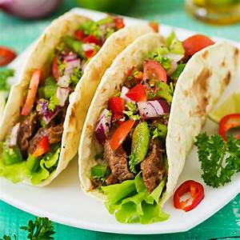

Tacos

My most basic meal for the hungry boy
Ingredients
- soft tortilla shells
- ground beef
- taco seasoning
- sourcream
- avocado
Instructions
- In pan cook ground beef until browned
- Add taco seasoning to pan with 1/3 cup water and let simmer until thickened
- fill shells with cooked ground beef
- top with sourcream and sliced avocado
Return to top
Return to main page